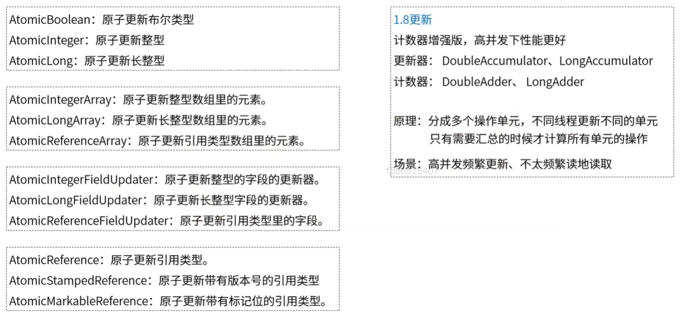

原子操作是指一个或者多个不可再分割的操作。这些操作的执行顺序不能被打乱，这些步骤也不可以被切割而只执行其中的一部分（不可中断性）。举个列子：
//就是一个原子操作
int i = 1;
//非原子操作，i++是一个多步操作，而且是可以被中断的。
//i++可以被分割成3步，第一步读取i的值，第二步计算i+1；第三部将最终值赋值给i
i++；在Java中，我们可以通过同步锁或者CAS操作来实现原子操作。
CAS是Compare and swap的简称，这个操作是硬件级别的操作，在硬件层面保证了操作的原子性。CAS有3个操作数，内存值V，旧的预期值A，要修改的新值B。当且仅当预期值A和内存值V相同时，将内存值V修改为B，否则什么都不做。Java中的sun.misc.Unsafe类提供了compareAndSwapInt和compareAndSwapLong等几个方法实现CAS。
另外，在jdk的atomic包下面提供了很多基于CAS实现的原子操作类，见下图：

下面我们就使用其中的AtomicInteger来看看怎么使用这些原子操作类。
package com.csx.demo.spring.boot.concurrent.atomic;
import java.util.ArrayList;
import java.util.List;
import java.util.concurrent.atomic.AtomicInteger;
public class AtomicIntegerDemo {
private static int THREAD_COUNT = 100;
public static void main(String[] args) throws InterruptedException {
NormalCounter normalCounter = new NormalCounter("normalCounter",0);
SafeCounter safeCounter = new SafeCounter("safeCounter",0);
List<Thread> threadList = new ArrayList<>();
for (int i = 0; i < THREAD_COUNT ; i++) {
Thread thread = new Thread(new Runnable() {
@Override
public void run() {
for (int j = 0; j < 10000; j++) {
normalCounter.add(1);
safeCounter.add(1);
}
}
});
threadList.add(thread);
}
for (Thread thread : threadList) {
thread.start();
}
for (Thread thread : threadList) {
thread.join();
}
System.out.println("normalCounter:"+normalCounter.getCount());
System.out.println("safeCounter:"+safeCounter.getCount());
}
public static class NormalCounter{
private String name;
private Integer count;
public NormalCounter(String name, Integer count) {
this.name = name;
this.count = count;
}
public void add(int delta){
this.count = count+delta;
}
public String getName() {
return name;
}
public void setName(String name) {
this.name = name;
}
public Integer getCount() {
return count;
}
public void setCount(Integer count) {
this.count = count;
}
}
public static class SafeCounter{
private String name;
private AtomicInteger count;
public SafeCounter(String name, Integer count) {
this.name = name;
this.count = new AtomicInteger(count);
}
public void add(int delta){
count.addAndGet(delta);
}
public String getName() {
return name;
}
public void setName(String name) {
this.name = name;
}
public int getCount() {
return count.get();
}
public void setCount(Integer count) {
this.count.set(count);
}
}
}上面的代码中，我们分别创建了一个普通的计数器和一个原子操作的计数器（使用AtomicInteger进行计数）。然后创建了100个线程，每个线程进行10000次计数。理论上线程执行完之后，计数器的值都是1000000，但是结果如下：
normalCounter:496527
safeCounter:1000000每次执行，普通计数器的值都是不一样的，而使用AtomicInteger进行计数的计数器都是1000000。
从Java1.5开始JDK的atomic包里提供了一个类AtomicStampedReference来解决ABA问题。这个类的compareAndSet方法作用是首先检查当前引用是否等于预期引用，并且当前标志是否等于预期标志，如果全部相等，则以原子方式将该引用和该标志的值设置为给定的更新值。
循环时间长开销大：自旋CAS如果长时间不成功，会给CPU带来非常大的执行开销。如果JVM能支持处理器提供的pause指令那么效率会有一定的提升，pause指令有两个作用，第一它可以延迟流水线执行指令（de-pipeline）,使CPU不会消耗过多的执行资源，延迟的时间取决于具体实现的版本，在一些处理器上延迟时间是零。第二它可以避免在退出循环的时候因内存顺序冲突（memory order violation）而引起CPU流水线被清空（CPU pipeline flush），从而提高CPU的执行效率。
只能保证一个共享变量的原子操作：当对一个共享变量执行操作时，我们可以使用循环CAS的方式来保证原子操作，但是对多个共享变量操作时，循环CAS就无法保证操作的原子性，这个时候就可以用锁，或者有一个取巧的办法，就是把多个共享变量合并成一个共享变量来操作。比如有两个共享变量i＝2,j=a，合并一下ij=2a，然后用CAS来操作ij。从Java1.5开始JDK提供了AtomicReference类来保证引用对象之间的原子性，你可以把多个变量放在一个对象里来进行CAS操作。
还是以上面的列子为列，普通的计数器我们只需要在计数方法上加锁就行了：
public synchronized void add(int delta){
this.count = count+delta;
}执行结果如下：
normalCounter:1000000
safeCounter:1000000两个计数器都能拿到正确的结果